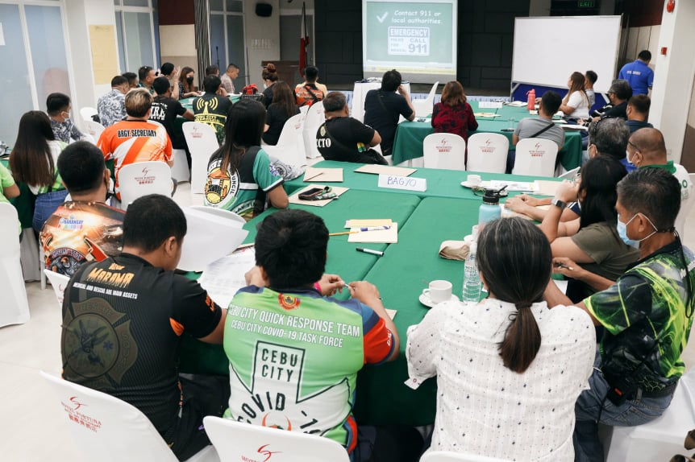
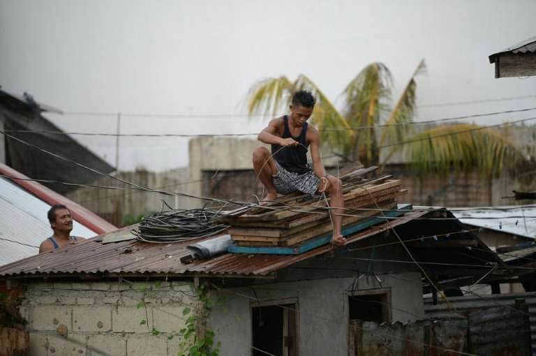
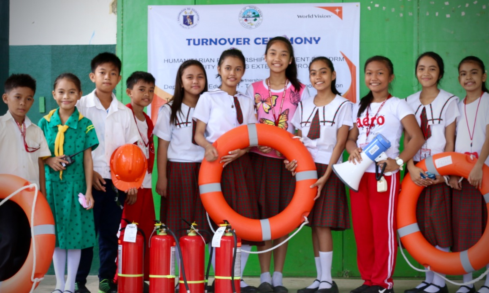
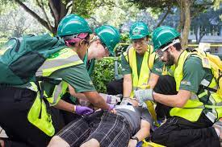
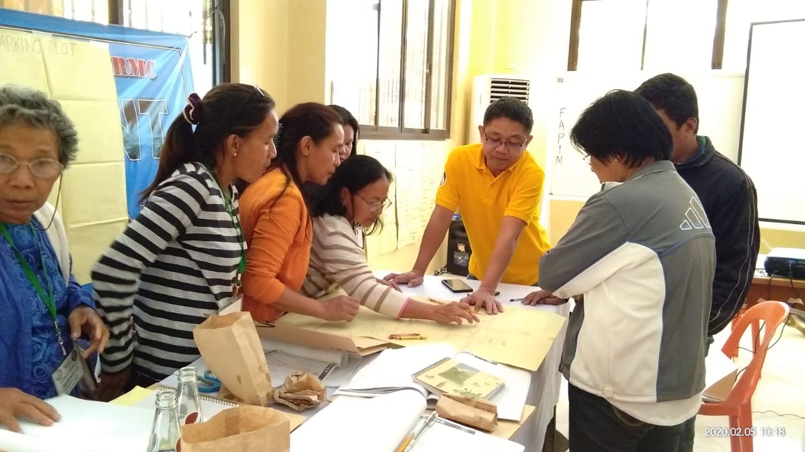

WHAT TO DO
BEFORE TYPHOON

Establish and maintain coordination with Barangay Disaster Coordinating Councils and personnel.
Ensure that house can withstand heavy rain and strong winds. House built at ground level may be anchored by guy wires to strengthen the stability of the structure.

Learn more about typhoon and other weather disturbances, their signs and warnings, effects and dangers and how to protect house and other properties
Learn something relevant to mitigation and preparedness for tropical cyclones

Participate actively in the school’s disaster response – drill or simulation
WHAT TO DO
DURING TYPHOON
Monitor through radio or other reliable sources the latest official report of PAGASA on the typhoon.

When the house is no longer safe, evacuate immediately to safer place like evacuation centers or house of relatives that are proven stable and can withstand strong wind and rain.
Stay indoors and away from windows.
Keep an open line of communication with relatives that are not affected to keep them posted.
Ensure that members of the family will remain calm by keeping them informed of the latest developments.

WHAT TO DO
AFTER TYPHOON

Help in attending to victims immediately.
In case of major cuts and wounds, seek necessary medical assistance at disaster station or hospital.


Help in checking the house for damages and losses.
Coordinate with the Barangay officials and LGU’s for assistance.
